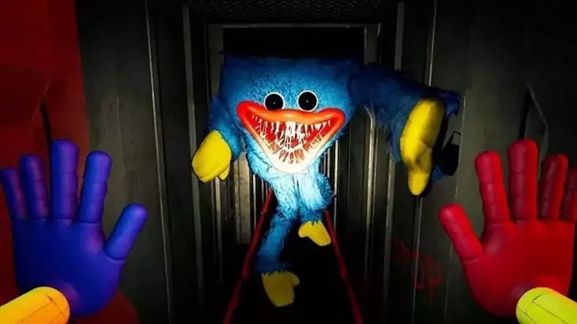

On This Website I Will Discuss the Musical Aspects of The Horror Game Poppy Playtime
What Genre Would You Assume This Game Is Based Off Of Audio?
In the game Poppy Playtime, the player returns to the Playtime co. factory, to see that many of its toys, in including its mascot have turn into monsters that roam the factory.
Now the player must navigate through the factory to escape, whilst uncovering the story behind why the factory closed, and what happened to the other workers.
This is a paragraph.

This is the Mascot of Playtime.Co, Huggy Wuggy, and the game's first antagonist.
In the first chapter there is a hair raising sequence where the main charcater is running from Huggy, inside the vents of the factory.
This sequecne i believe translates well to the topic of Affect and Emotion. Huggy suddenly appears which leads to a chase, despite seeming too big for this
environment, Huggy is able to follow the player closely.
In this sequence when huggy first apperas, the immediate gut reaction is to run, but the emotion of the game comes along with the twists and turns of the vents.
The goal of this sequence is to escape and detour Huggy Wuggy, so the player must act quickly in order to survive this situation. They must also use the terrain to their advantage
and not become distracted.
"fort-da the player if killed is able to respawn. even though this feature is prevelent in many games, part of the lore
of the game is that ominous messages appear such as these: